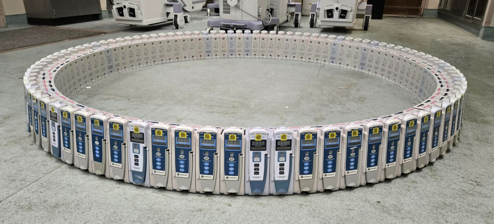

Who's Behind This
I'm Jake. In 2011, I started troubleshooting a wide range of electronics as a contractor — AV systems, paging, alarm systems, intercoms, nurse call, TV headends, door access, and more. During that time, I worked in many of the hospitals in my area and started learning what biomed teams actually do.
That experience pulled me toward medical equipment, and in 2018 I became a full-time Biomedical Equipment Technician. Since then, I’ve worked my way up in clinical engineering while supporting a large and varied equipment inventory across real patient care areas.
I’ve learned that if you can troubleshoot one type of equipment well, you can apply the same logic to almost any system: understand the symptom, verify the basics, follow the evidence, and document what actually happened.
This site exists because there still are not enough practical, plain-English biomed resources online.
— Jake

Why This Site Exists
In a clinical environment, equipment problems can create stress, rushed decisions, downtime, wasted parts, and unnecessary vendor calls. Even experienced technicians can get derailed when the pressure is high and the failure does not match the manual cleanly.
Jake Troubleshoots is built around a different approach: slow down, protect the patient, verify the complaint, check the simple things first, and work from the symptom toward the cause.
Most manuals tell you how to replace parts. They do not always teach you how to think through a failure. This site is meant to help fill that gap.
What You’ll Find Here
Jake Troubleshoots is growing into a connected biomed resource library, not just a list of guide pages.
- Troubleshooting Guides: symptom-based workflows for alarms, errors, failures, connectivity issues, power problems, and equipment behavior.
- Preventive Maintenance Procedures: equipment-specific PM pages with manufacturer-listed intervals, AEM notes, electrical safety documentation, and CMMS copy text.
- Biomed Basics: plain-English explanations of concepts like electrical safety testing, batteries, functional testing, documentation, and biomed terminology.
- Vendor Contacts: manufacturer support resources for service coordination and troubleshooting escalation.
- Equipment Hubs: asset type, manufacturer, and model pages that connect related guides and PM procedures.
What the Guides Focus On
Every troubleshooting guide is built around real-world symptom patterns, not just parts lists.
- Logical paths from symptom to likely cause
- Common failure modes seen in clinical use
- Quick checks to run before chasing expensive replacements
- Notes on what typically wastes time and what does not
- Clear documentation habits that support real work orders
The goal is not just to fix today’s problem. It is to help biomeds approach the next problem more confidently.
Who This Site Is For
This site is built for biomedical technicians, clinical engineers, HTM professionals, students, and healthcare technology staff who want practical help with real equipment problems.
- BMETs looking for symptom-based troubleshooting guidance
- Clinical engineering teams building stronger documentation habits
- Newer techs trying to understand the “why” behind the work
- Experienced techs who want faster paths to common checks
- Anyone who learns better from plain-English examples than dense manuals
Suggest a Guide or PM Procedure
Don’t see the equipment, problem, or PM procedure you’re looking for? Real-world requests help shape what gets built next.
Contact Me
Have feedback, corrections, suggestions, or an equipment issue that should be covered?
Use the email below. I read everything. Response time varies, but this site exists because of exactly these kinds of real-world problems.
Important Note
Jake Troubleshoots is intended for trained personnel. Always follow your facility policy, manufacturer service documentation, applicable standards, patient safety requirements, and your organization’s approved maintenance strategy.